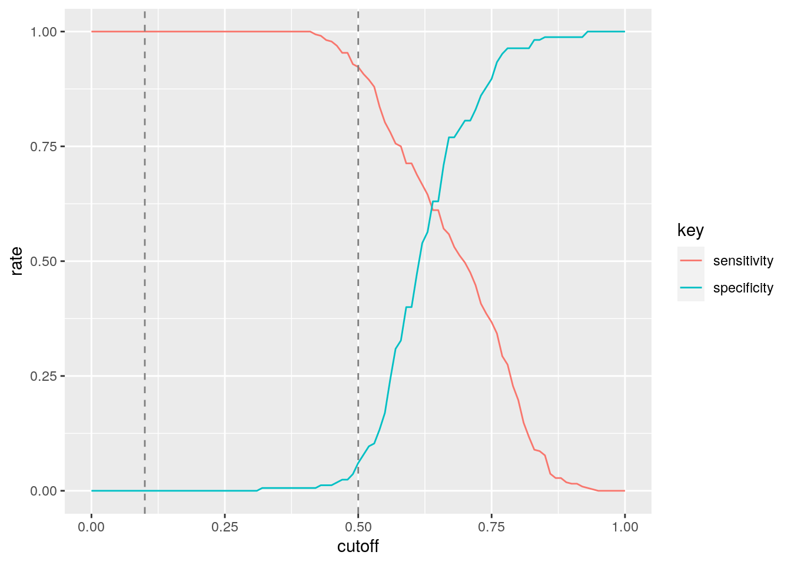

January 1, 0001
Introduction
The “nuke” dataset contains Stockholm International Peace Research Institute’s record of Nuclear Explosions From 1945–1998. This dataset lists the date and location of each explosion, the country responsible, the detonation site, and (where known) its explosive yield(energy released) , among other variables.
year,country, region, source, lattitude, longitude, Seismic magnitude (mb), explosive yield,
Clean Data
library(readr)
library(tidyverse)
sipri_report_explosions <- read_csv("sipri-report-explosions.csv")
nuke <- sipri_report_explosions
glimpse(nuke)## Rows: 2,051
## Columns: 18
## $ date <dbl> 450716, 450805, 450809, 460630, 460724, 480414, 480430, 480…
## $ origin_t <dbl> 123000, 231500, 15800, 220100, 213500, 181700, 180900, 1804…
## $ id_no <dbl> 45001, 45002, 45003, 46001, 46002, 48001, 48002, 48003, 490…
## $ country <chr> "USA", "USA", "USA", "USA", "USA", "USA", "USA", "USA", "US…
## $ region <chr> "ALAMOGORDO", "HIROSHIMA", "NAGASAKI", "BIKINI", "BIKINI", …
## $ source <chr> "DOE", "DOE", "DOE", "DOE", "DOE", "DOE", "DOE", "DOE", "DO…
## $ latitude <dbl> 32.54, 34.23, 32.45, 11.35, 11.35, 11.30, 11.30, 11.30, 48.…
## $ longitude <dbl> -105.57, 132.27, 129.52, 165.20, 165.20, 162.15, 162.15, 16…
## $ mb <dbl> 0, 0, 0, 0, 0, 0, 0, 0, 0, 0, 0, 0, 0, 0, 0, 0, 0, 0, 0, 0,…
## $ Ms <dbl> 0, 0, 0, 0, 0, 0, 0, 0, 0, 0, 0, 0, 0, 0, 0, 0, 0, 0, 0, 0,…
## $ depth <dbl> -0.100, -0.600, -0.600, -0.200, 0.030, -0.080, -0.080, -0.0…
## $ yield_1 <dbl> 21.0, 15.0, 21.0, 21.0, 21.0, 37.0, 49.0, 18.0, 22.0, 1.0, …
## $ yield_u <dbl> 21.0, 15.0, 21.0, 21.0, 21.0, 37.0, 49.0, 18.0, 22.0, 1.0, …
## $ purpose <chr> "WR", "COMBAT", "COMBAT", "WE", "WE", "WR", "WR", "WR", "WR…
## $ name <chr> "TRINITY", "LITTLEBOY", "FATMAN", "ABLE", "BAKER", "X-RAY",…
## $ type <chr> "TOWER", "AIRDROP", "AIRDROP", "AIRDROP", "UW", "TOWER", "T…
## $ date_long <dbl> 19450716, 19450805, 19450809, 19460630, 19460724, 19480414,…
## $ year <dbl> 1945, 1945, 1945, 1946, 1946, 1948, 1948, 1948, 1949, 1951,…nnuke <- nuke %>% select(-date_long, -id_no, -depth, -origin_t,
-purpose, -Ms, -yield_u, -date)
glimpse(nnuke)## Rows: 2,051
## Columns: 10
## $ country <chr> "USA", "USA", "USA", "USA", "USA", "USA", "USA", "USA", "US…
## $ region <chr> "ALAMOGORDO", "HIROSHIMA", "NAGASAKI", "BIKINI", "BIKINI", …
## $ source <chr> "DOE", "DOE", "DOE", "DOE", "DOE", "DOE", "DOE", "DOE", "DO…
## $ latitude <dbl> 32.54, 34.23, 32.45, 11.35, 11.35, 11.30, 11.30, 11.30, 48.…
## $ longitude <dbl> -105.57, 132.27, 129.52, 165.20, 165.20, 162.15, 162.15, 16…
## $ mb <dbl> 0, 0, 0, 0, 0, 0, 0, 0, 0, 0, 0, 0, 0, 0, 0, 0, 0, 0, 0, 0,…
## $ yield_1 <dbl> 21.0, 15.0, 21.0, 21.0, 21.0, 37.0, 49.0, 18.0, 22.0, 1.0, …
## $ name <chr> "TRINITY", "LITTLEBOY", "FATMAN", "ABLE", "BAKER", "X-RAY",…
## $ type <chr> "TOWER", "AIRDROP", "AIRDROP", "AIRDROP", "UW", "TOWER", "T…
## $ year <dbl> 1945, 1945, 1945, 1946, 1946, 1948, 1948, 1948, 1949, 1951,…nnuke1 <- nnuke %>% filter(mb > 0)
nona <- nnuke1 %>% na.omit()
nuke1 <- nonaMANOVA Test
man <- manova(cbind(mb, yield_1, year) ~ country, data = nuke1)
summary(man)## Df Pillai approx F num Df den Df Pr(>F)
## country 4 0.082474 3.4205 12 1452 5.681e-05 ***
## Residuals 484
## ---
## Signif. codes: 0 '***' 0.001 '**' 0.01 '*' 0.05 '.' 0.1 ' ' 1summary.aov(man)## Response mb :
## Df Sum Sq Mean Sq F value Pr(>F)
## country 4 0.721 0.18027 0.5419 0.705
## Residuals 484 161.003 0.33265
##
## Response yield_1 :
## Df Sum Sq Mean Sq F value Pr(>F)
## country 4 69808 17452 1.011 0.4012
## Residuals 484 8354990 17262
##
## Response year :
## Df Sum Sq Mean Sq F value Pr(>F)
## country 4 2048.3 512.08 9.6658 1.582e-07 ***
## Residuals 484 25641.7 52.98
## ---
## Signif. codes: 0 '***' 0.001 '**' 0.01 '*' 0.05 '.' 0.1 ' ' 1nuke1 %>% group_by(country) %>% summarize(min(year), mean(year),
mean(yield_1), max(yield_1), mean(mb))## # A tibble: 5 x 6
## country `min(year)` `mean(year)` `mean(yield_1)` `max(yield_1)` `mean(mb)`
## <chr> <dbl> <dbl> <dbl> <dbl> <dbl>
## 1 FRANCE 1965 1979. 32.8 1000 5.1
## 2 INDIA 1998 1998 0 0 5.3
## 3 UK 1965 1982. 17.0 20.6 5.13
## 4 USA 1957 1976. 41.8 1300 5.04
## 5 USSR 1965 1979. 11.2 140 5.13pairwise.t.test(nuke1$mb, nuke1$country, p.adj = "none")##
## Pairwise comparisons using t tests with pooled SD
##
## data: nuke1$mb and nuke1$country
##
## FRANCE INDIA UK USA
## INDIA - - - -
## UK - - - -
## USA - - - -
## USSR - - - -
##
## P value adjustment method: none# Bonferroni Correction sig/test
0.05/4## [1] 0.0125# 0.0125
# type 1 error Probability
1 - (0.95^4)## [1] 0.1854938# 0.1854938A one-way MANOVA test was conducted to determine the effect of the Country of origin on year, explosive yield, and seismic magnitude (mb) (1-10). According to the MANOVA, there was a significant difference found for each country (Pillai trace= 0.25404, approxF= 31.918, p < 2.2e-16). The univariate ANOVA test for year and seismic magnitude (mb) was found to be significant (p < 2.2e-16) while the explosive yield was not (p=0.1333). The different countries nuclear explosioins differ in year and seismic magnitude but not explosive yield. 1 MANOVA and 3 ANOVA tests were conducted. The un-adjusted probability of a type one error was 0.1854938 with a Bonferroni corrected significance level of 0.05/4 (0.0125). Including the correction, the year and mb are still significant according to the country of origin although it is unlikely that all assumptions were met.
Randomization
yield <- nuke1 %>% select(country, yield_1)
glimpse(yield)## Rows: 489
## Columns: 2
## $ country <chr> "USA", "USA", "USA", "USA", "USA", "USA", "USA", "USA", "USA"…
## $ yield_1 <dbl> 1.700, 0.072, 5.000, 1.300, 2.600, 0.000, 13.400, 3.000, 0.50…ggplot(yield, aes(yield_1, fill = country)) + geom_histogram(bins = 6.5) +
facet_wrap(~country, ncol = 2) #Explosive Yield by Countryggplot(nuke1, aes(mb, fill = country)) + geom_histogram(bins = 6.5) +
facet_wrap(~country, ncol = 2) #mb by Countrynuke1 %>% group_by(country) %>% summarize(means = mean(mb))## # A tibble: 5 x 2
## country means
## <chr> <dbl>
## 1 FRANCE 5.1
## 2 INDIA 5.3
## 3 UK 5.13
## 4 USA 5.04
## 5 USSR 5.13nuke1 %>% group_by(country) %>% summarize(means = mean(mb)) %>%
summarize(mean_diff = diff(means))## # A tibble: 4 x 1
## mean_diff
## <dbl>
## 1 0.2
## 2 -0.170
## 3 -0.0859
## 4 0.0884# USA
rand_dist <- vector()
for (i in 1:5000) {
new <- data.frame(mb = sample(nuke1$mb), country = nuke1$country)
rand_dist[i] <- mean(new[new$country == "USA", ]$mb)
mean(new[new$condition == "USA", ]$mb)
}
{
hist(rand_dist, main = "Distribution of Siesmic Magnitude (USA)",
ylab = "count")
abline(v = 1.48, col = "red")
}# USSR
rand_dist <- vector()
for (i in 1:5000) {
new <- data.frame(mb = sample(nuke1$mb), country = nuke1$country)
rand_dist[i] <- mean(new[new$country == "USSR", ]$mb)
mean(new[new$condition == "USSR", ]$mb)
}
{
hist(rand_dist, main = "histogram of random distribution (USSR) ",
ylab = "count")
}# FRANCE
rand_dist <- vector()
for (i in 1:5000) {
new <- data.frame(mb = sample(nuke1$mb), country = nuke1$country)
rand_dist[i] <- mean(new[new$country == "FRANCE", ]$mb)
mean(new[new$condition == "FRANCE", ]$mb)
}
{
hist(rand_dist, main = "histogram of random distribution (FRANCE) ",
ylab = "count")
}
# INDIA
rand_dist <- vector()
for (i in 1:5000) {
new <- data.frame(mb = sample(nuke1$mb), country = nuke1$country)
rand_dist[i] <- mean(new[new$country == "INDIA", ]$mb)
mean(new[new$condition == "INDIA", ]$mb)
}
{
hist(rand_dist, main = "histogram of random distribution (INDIA) ",
ylab = "count")
}# UK
rand_dist <- vector()
for (i in 1:5000) {
new <- data.frame(mb = sample(nuke1$mb), country = nuke1$country)
rand_dist[i] <- mean(new[new$country == "UK", ]$mb)
mean(new[new$condition == "UK", ]$mb)
}
{
hist(rand_dist, main = "histogram of random distribution (UK) ",
ylab = "count")
}Null Hypothesis: The explosive yield and mb (size/effect of the explosion) are the same across different countries
Alternative Hypothesis: The explosive yield and mb (size/effect of the explosion) differ across different countries
Based on this hypothesis, we f reject the null hypothesis that all of the countries have the same impact on seismic magnitudes
Linear Regression
nuke1$latitude <- nuke1$latitude - mean(nuke1$latitude)
nuke1$longitude <- nuke1$longitude - mean(nuke1$longitude)
fit <- lm(mb ~ latitude + longitude, data = nuke1)
summary(fit)##
## Call:
## lm(formula = mb ~ latitude + longitude, data = nuke1)
##
## Residuals:
## Min 1Q Median 3Q Max
## -2.54172 -0.37850 -0.00131 0.45838 1.54075
##
## Coefficients:
## Estimate Std. Error t value Pr(>|t|)
## (Intercept) 5.0701431 0.0259784 195.168 <2e-16 ***
## latitude -0.0006860 0.0013858 -0.495 0.6208
## longitude 0.0007708 0.0004001 1.927 0.0546 .
## ---
## Signif. codes: 0 '***' 0.001 '**' 0.01 '*' 0.05 '.' 0.1 ' ' 1
##
## Residual standard error: 0.5745 on 486 degrees of freedom
## Multiple R-squared: 0.008266, Adjusted R-squared: 0.004185
## F-statistic: 2.025 on 2 and 486 DF, p-value: 0.1331ggplot(nuke1, aes(y = longitude, x = latitude, color = mb)) +
geom_point() + stat_smooth(method = "lm", se = FALSE)
ggplot(nuke1, aes(y = mb, x = longitude)) + geom_point() + stat_smooth(method = "lm",
se = FALSE) #mb for every 1 unit Longitude ggplot(nuke1, aes(y = mb, x = latitude)) + geom_point() + stat_smooth(method = "lm",
se = FALSE) #mb for every 1 unit Latitude qqnorm(nuke1$latitude)qqnorm(nuke1$longitude)summary(fit)$r.sq## [1] 0.008265783library(lmtest)
library(sandwich)
bptest(fit)##
## studentized Breusch-Pagan test
##
## data: fit
## BP = 9.4093, df = 2, p-value = 0.009053coeftest(fit, vcov = vcovHC(fit))##
## t test of coefficients:
##
## Estimate Std. Error t value Pr(>|t|)
## (Intercept) 5.07014315 0.02603693 194.7289 < 2e-16 ***
## latitude -0.00068599 0.00125627 -0.5461 0.58528
## longitude 0.00077083 0.00039465 1.9532 0.05137 .
## ---
## Signif. codes: 0 '***' 0.001 '**' 0.01 '*' 0.05 '.' 0.1 ' ' 1ffit <- lm(mb ~ latitude, data = nuke1) #effect of latitude
summary(ffit)##
## Call:
## lm(formula = mb ~ latitude, data = nuke1)
##
## Residuals:
## Min 1Q Median 3Q Max
## -2.57288 -0.37301 0.02692 0.42695 1.71711
##
## Coefficients:
## Estimate Std. Error t value Pr(>|t|)
## (Intercept) 5.0701431 0.0260506 194.63 <2e-16 ***
## latitude 0.0006908 0.0011907 0.58 0.562
## ---
## Signif. codes: 0 '***' 0.001 '**' 0.01 '*' 0.05 '.' 0.1 ' ' 1
##
## Residual standard error: 0.5761 on 487 degrees of freedom
## Multiple R-squared: 0.0006907, Adjusted R-squared: -0.001361
## F-statistic: 0.3366 on 1 and 487 DF, p-value: 0.5621fffit <- lm(mb ~ longitude, data = nuke1) #effect of latitude
summary(fffit)##
## Call:
## lm(formula = mb ~ longitude, data = nuke1)
##
## Residuals:
## Min 1Q Median 3Q Max
## -2.54784 -0.38590 0.00051 0.45221 1.55482
##
## Coefficients:
## Estimate Std. Error t value Pr(>|t|)
## (Intercept) 5.0701431 0.0259583 195.319 <2e-16 ***
## longitude 0.0006687 0.0003425 1.952 0.0515 .
## ---
## Signif. codes: 0 '***' 0.001 '**' 0.01 '*' 0.05 '.' 0.1 ' ' 1
##
## Residual standard error: 0.574 on 487 degrees of freedom
## Multiple R-squared: 0.007766, Adjusted R-squared: 0.005728
## F-statistic: 3.812 on 1 and 487 DF, p-value: 0.05147It was observed that for every one unit increase in magnitude (mb), Latitude decreases by 0.0006860 (p= 0.6208) while longitude increased by 0.0007708 (p=0.0546 ). The bp test returned a p value of 0.009053 which indicates that heteroscedasticity does not exist. The chi sq test revealed that this model accounts for 0.008265783 of the total variation. Based on this data we fail to reject the null hypothesis that that long/lat affect the seismic magnitude of an explosion.
Linear Regression (With Interaction)
newnuke1 <- nuke1 %>% select(mb, longitude, latitude)
view(newnuke1)
fitt <- lm(mb ~ latitude * longitude, data = newnuke1)
sd1 <- newnuke1[sample(nrow(newnuke1), replace = TRUE), ]
sample_dist <- replicate(1000, {
sd1 <- newnuke1[sample(nrow(newnuke1), replace = TRUE), ]
fittt <- lm(mb ~ latitude * longitude, data = sd1)
coef(fittt)
})
summary(fitt) #uncorrected##
## Call:
## lm(formula = mb ~ latitude * longitude, data = newnuke1)
##
## Residuals:
## Min 1Q Median 3Q Max
## -2.53771 -0.39978 -0.03529 0.46236 1.56181
##
## Coefficients:
## Estimate Std. Error t value Pr(>|t|)
## (Intercept) 5.045e+00 3.187e-02 158.306 <2e-16 ***
## latitude 5.116e-04 1.637e-03 0.313 0.755
## longitude 1.555e-04 6.009e-04 0.259 0.796
## latitude:longitude 2.965e-05 2.163e-05 1.371 0.171
## ---
## Signif. codes: 0 '***' 0.001 '**' 0.01 '*' 0.05 '.' 0.1 ' ' 1
##
## Residual standard error: 0.5739 on 485 degrees of freedom
## Multiple R-squared: 0.0121, Adjusted R-squared: 0.005985
## F-statistic: 1.979 on 3 and 485 DF, p-value: 0.1162coeftest(fitt, vcov = vcovHC(fitt)) #corrected##
## t test of coefficients:
##
## Estimate Std. Error t value Pr(>|t|)
## (Intercept) 5.0448e+00 3.1429e-02 160.5160 < 2e-16 ***
## latitude 5.1162e-04 1.4310e-03 0.3575 0.72085
## longitude 1.5552e-04 5.6814e-04 0.2737 0.78441
## latitude:longitude 2.9654e-05 1.7430e-05 1.7014 0.08952 .
## ---
## Signif. codes: 0 '***' 0.001 '**' 0.01 '*' 0.05 '.' 0.1 ' ' 1It was observed that the p values and the Std. Error for the uncorected SE’s are higher than the values for the corrected SE’s.
Logistic Regression Model
library(plotROC)
nuke1$Binary <- ifelse(nuke1$country == "USA", 1, 0)
glimpse(nuke1)## Rows: 489
## Columns: 11
## $ country <chr> "USA", "USA", "USA", "USA", "USA", "USA", "USA", "USA", "US…
## $ region <chr> "NTS", "NTS", "NTS", "NTS", "NTS", "NTS", "NTS", "CARLSBAD …
## $ source <chr> "DOE", "DOE", "DOE", "DOE", "DOE", "DOE", "DOE", "DOE", "DO…
## $ latitude <dbl> 3.9550409, 3.9550409, 3.9550409, 3.9550409, 3.9550409, 3.95…
## $ longitude <dbl> -33.35105, -33.35105, -33.35105, -33.35105, -33.35105, -33.…
## $ mb <dbl> 4.1, 2.6, 4.4, 4.8, 4.4, 2.5, 4.3, 4.6, 3.4, 3.5, 4.3, 4.9,…
## $ yield_1 <dbl> 1.700, 0.072, 5.000, 1.300, 2.600, 0.000, 13.400, 3.000, 0.…
## $ name <chr> "RAINIER", "TAMALPAIS", "LOGAN", "SANTA FE", "ANTLER", "SHR…
## $ type <chr> "TUNNEL", "TUNNEL", "TUNNEL", "BALLOON", "TUNNEL", "SHAFT",…
## $ year <dbl> 1957, 1958, 1958, 1958, 1961, 1961, 1961, 1961, 1961, 1961,…
## $ Binary <dbl> 1, 1, 1, 1, 1, 1, 1, 1, 1, 1, 1, 1, 1, 1, 1, 1, 1, 1, 1, 1,…fittt <- glm(Binary ~ year + yield_1, data = nuke1, family = "binomial")
coeftest(fittt)##
## z test of coefficients:
##
## Estimate Std. Error z value Pr(>|z|)
## (Intercept) 139.1154258 28.1180846 4.9475 7.516e-07 ***
## year -0.0700177 0.0142107 -4.9271 8.346e-07 ***
## yield_1 0.0011341 0.0012121 0.9357 0.3494
## ---
## Signif. codes: 0 '***' 0.001 '**' 0.01 '*' 0.05 '.' 0.1 ' ' 1exp(coef(fittt))## (Intercept) year yield_1
## 2.612533e+60 9.323773e-01 1.001135e+00nuke1$probability <- predict(fittt, type = "response")
table(predict = as.numeric(nuke1$probability > 0.5), truth = nuke1$Binary) %>%
addmargins()## truth
## predict 0 1 Sum
## 0 10 25 35
## 1 155 299 454
## Sum 165 324 489# TNR = 0.9228395
299/324## [1] 0.9228395# TPR = 0.06060606
10/165## [1] 0.06060606# PPV = 0.6585903
299/454## [1] 0.6585903pca1 <- princomp(nuke1[c("year", "mb")])
nuke1$predictor <- pca1$scores[, 1]
ggplot(nuke1, aes(predictor, probability)) + geom_point(aes(color = country),
alpha = 0.5, size = 4)ggplot(nuke1) + geom_density(aes(probability, fill = Binary)) +
xlab("logit") #Density Plot (Log odds x Binary)sens <- function(p, data = nuke1, y = Binary) mean(nuke1[nuke1$Binary ==
1, ]$probability > p)
spec <- function(p, data = nuke1, y = Binary) mean(nuke1[nuke1$Binary ==
0, ]$probability < p)
sensitivity <- sapply(seq(0, 1, 0.01), sens, nuke1)
specificity <- sapply(seq(0, 1, 0.01), spec, nuke1)
ROC1 <- data.frame(sensitivity, specificity, cutoff = seq(0,
1, 0.01))
ROC1 %>% gather(key, rate, -cutoff) %>% ggplot(aes(cutoff, rate,
color = key)) + geom_path() + geom_vline(xintercept = c(0.1,
0.5), lty = 2, color = "gray50")
ROC1$TPR <- sensitivity
ROC1$FPR <- 1 - specificity
ROC1 %>% ggplot(aes(FPR, TPR)) + geom_path(size = 1.5) + geom_segment(aes(x = 0,
y = 0, xend = 1, yend = 1), lty = 2) + scale_x_continuous(limits = c(0,
1))ROCplot <- ggplot(nuke1) + geom_roc(aes(d = Binary, m = predictor),
n.cuts = 0)
calc_auc(ROCplot)## PANEL group AUC
## 1 1 -1 0.3576506class_diag <- function(probs, truth) {
tab <- table(factor(probs > 0.5, levels = c("FALSE", "TRUE")),
truth)
acc = sum(diag(tab))/sum(tab)
sens = tab[2, 2]/colSums(tab)[2]
spec = tab[1, 1]/colSums(tab)[1]
ppv = tab[2, 2]/rowSums(tab)[2]
if (is.numeric(truth) == FALSE & is.logical(truth) == FALSE)
truth <- as.numeric(truth) - 1
# CALCULATE EXACT AUC
ord <- order(probs, decreasing = TRUE)
probs <- probs[ord]
truth <- truth[ord]
TPR = cumsum(truth)/max(1, sum(truth))
FPR = cumsum(!truth)/max(1, sum(!truth))
dup <- c(probs[-1] >= probs[-length(probs)], FALSE)
TPR <- c(0, TPR[!dup], 1)
FPR <- c(0, FPR[!dup], 1)
n <- length(TPR)
auc <- sum(((TPR[-1] + TPR[-n])/2) * (FPR[-1] - FPR[-n]))
data.frame(acc, sens, spec, ppv, auc)
}
k = 10
data1 <- nuke1[sample(nrow(nuke1)), ]
folds <- cut(seq(1:nrow(nuke1)), breaks = k, labels = F)
diags <- NULL
for (i in 1:k) {
train <- data1[folds != i, ]
test <- data1[folds == i, ]
truth <- test$Binary
fit5 <- glm(Binary ~ year + yield_1, data = nuke1, family = "binomial")
probs <- predict(fit5, newdata = test, type = "response")
diags <- rbind(diags, class_diag(probs, truth))
}
apply(diags, 2, mean)## acc sens spec ppv auc
## 0.63193027 0.92423693 0.06185046 0.65928648 0.63928303# acc sens spec ppv auc 0.63201531 0.92326200 0.06015146
# 0.65858885 0.64767851The TNR was found to be 0.9228395 and the TPR was 0.06060606. These values indicate that the madel wad fairly good at indicating wether or not the origin of the bomb was the USA. The PPV was found to be 0.6585903 which is the proportion of the data that was correctly predicted to be from the ‘USA’. The AUC value was found to be 0.64767851 which means the model is ‘fair’ at predicting the that the bomb was from the USA.The calculated values for accuracy, sensitivity , specificity, ppv and auc are all as shown below.
#acc sens spec ppv auc #0.63201531 0.92326200 0.06015146 0.65858885 0.64767851
LASSO Regression
library(glmnet)
fit6 <- glm(Binary ~ mb + yield_1 + latitude + longitude, data = nuke1,
family = binomial)
x <- model.matrix(fit6)
y <- as.matrix(nuke1$Binary)
cv <- cv.glmnet(x, y, family = "binomial")
lasso <- glmnet(x, y, family = "binomial", lambda = cv$lambda.1se)
coef(lasso)## 6 x 1 sparse Matrix of class "dgCMatrix"
## s0
## (Intercept) 0.81209168
## (Intercept) .
## mb .
## yield_1 .
## latitude 0.04909978
## longitude -0.02065814prob11 <- predict(lasso, newx = x, type = "response")
class_diag(prob11, nuke1$Binary)## acc sens spec ppv auc
## 1 0.9406953 0.9753086 0.8727273 0.9376855 0.9089693# acc=0.9406953 sens=0.9753086 spec=0.8727273 ppv=0.9376855
# auc=0.9089693
k = 10
data2 <- nuke1[sample(nrow(nuke1)), ]
folds2 <- cut(seq(1:nrow(nuke1)), breaks = k, labels = F)
diags <- NULL
for (i in 1:k) {
train <- data2[folds2 != i, ]
test <- data2[folds2 == i, ]
truth <- test$Binary
fit <- glm(Binary ~ mb + yield_1 + latitude + longitude,
data = train, family = "binomial")
probs12 <- predict(fit, newdata = test, type = "response")
diags <- rbind(diags, class_diag(probs12, truth))
}
apply(diags, 2, mean)## acc sens spec ppv auc
## 0.9365221 0.9742167 0.8664616 0.9296362 0.9072185# acc sens spec ppv auc 0.9366497 0.9722831 0.8559121
# 0.9296818 0.9040297
summary(fit6)##
## Call:
## glm(formula = Binary ~ mb + yield_1 + latitude + longitude, family = binomial,
## data = nuke1)
##
## Deviance Residuals:
## Min 1Q Median 3Q Max
## -2.3091 -0.3844 0.3944 0.4199 3.7810
##
## Coefficients:
## Estimate Std. Error z value Pr(>|z|)
## (Intercept) 1.905519 1.585745 1.202 0.2295
## mb -0.220434 0.312525 -0.705 0.4806
## yield_1 0.002895 0.001414 2.047 0.0407 *
## latitude 0.094558 0.009279 10.191 <2e-16 ***
## longitude -0.035526 0.002839 -12.513 <2e-16 ***
## ---
## Signif. codes: 0 '***' 0.001 '**' 0.01 '*' 0.05 '.' 0.1 ' ' 1
##
## (Dispersion parameter for binomial family taken to be 1)
##
## Null deviance: 625.25 on 488 degrees of freedom
## Residual deviance: 272.67 on 484 degrees of freedom
## AIC: 282.67
##
## Number of Fisher Scoring iterations: 5# Residual deviance: 272.67The longitude,latitude,mb, and yield_1 variables were retained. The accuracy, specificity, sensitivity ,ppv, ad AUC are all higher when compared to the logistic regression. The model was found to have a Null deviance of 625.25 and a residual standard error of 272.67
…